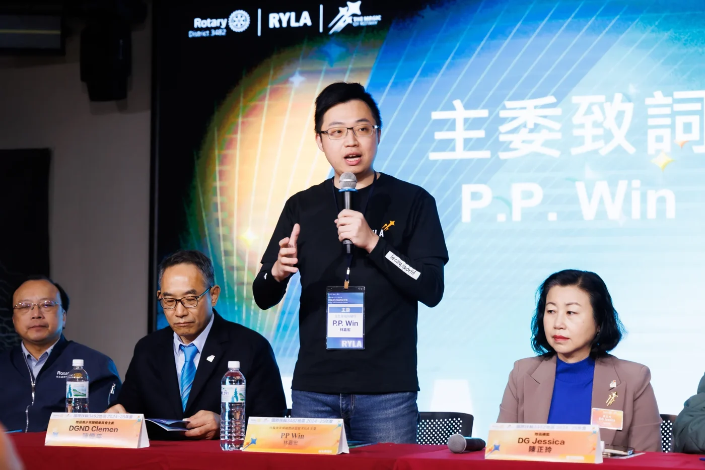
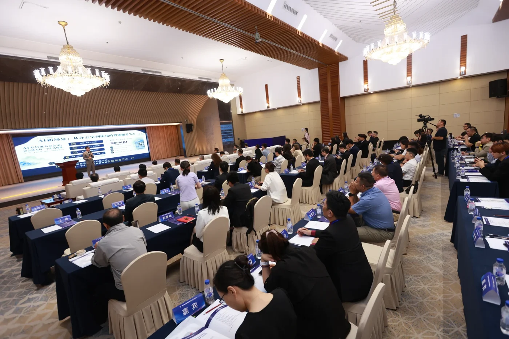
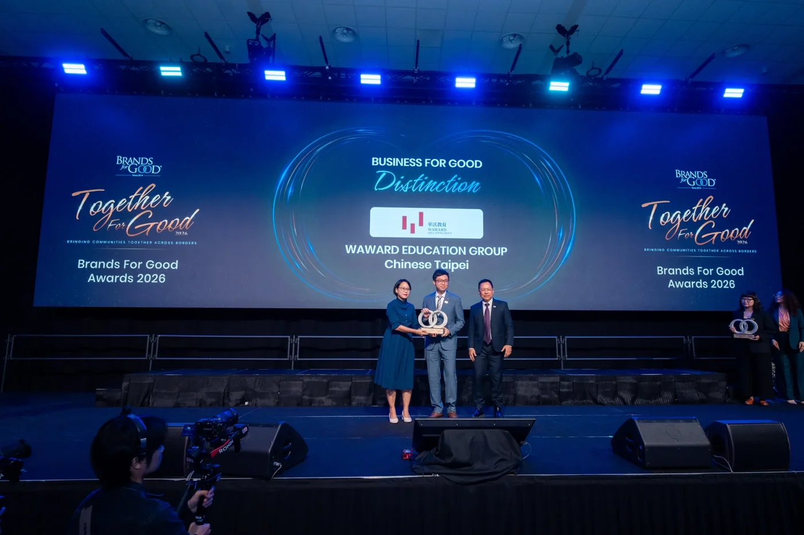
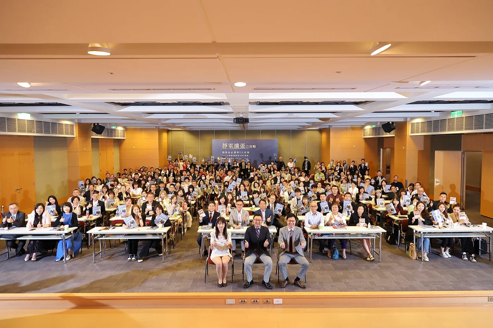
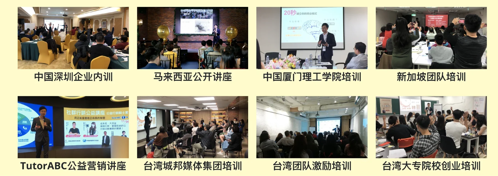
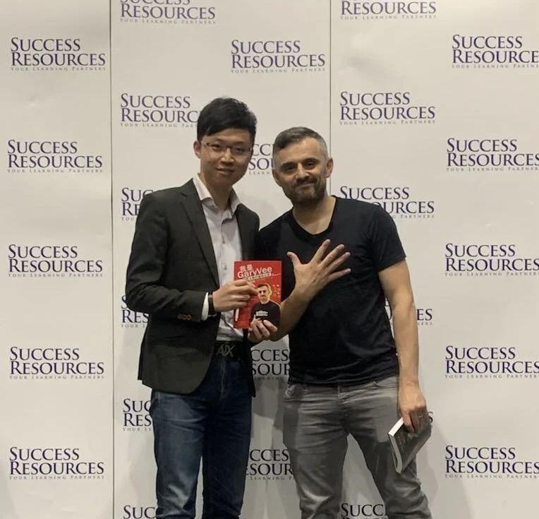
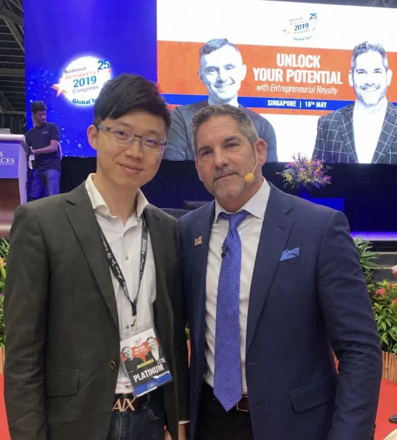
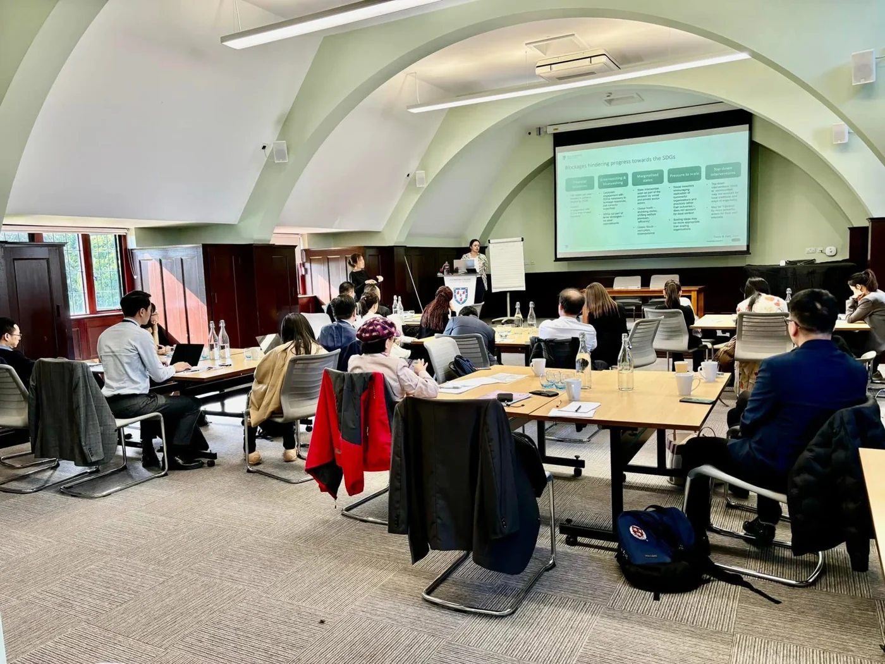
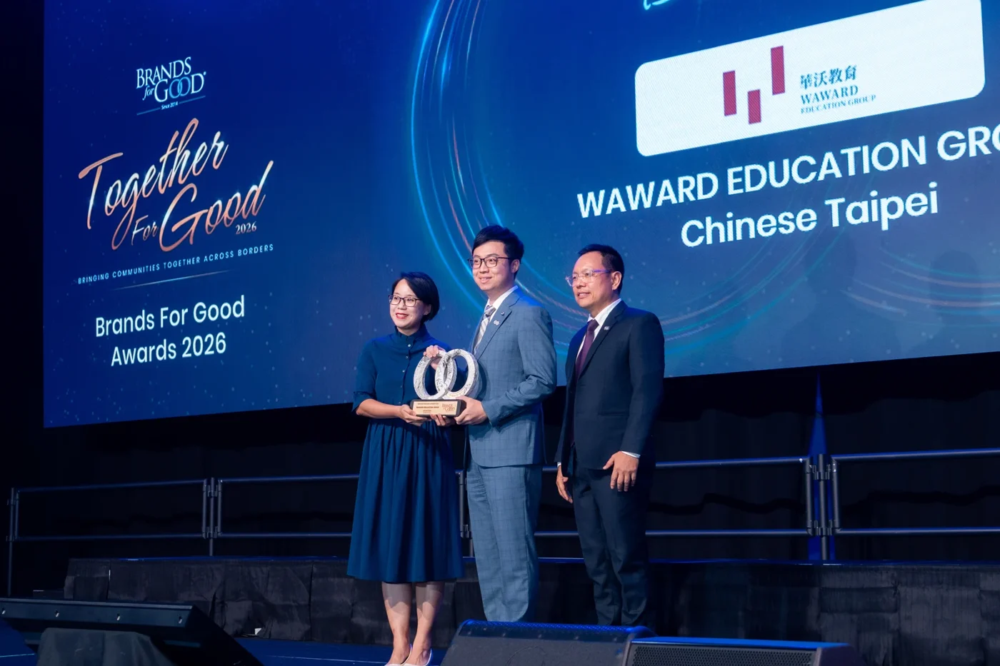

銷售演講
讓你的演講
創造現金流、放大人效

三大實戰主軸
讓你的演講
創造現金流、放大人效
倍增營業收入、
規模化事業版圖
掌握資本思維
加速事業成長
更大的格局，從這一堂課開始
你不是沒有內容
而是還沒把內容，轉化成商業語言
換一個對象
就要換一套提案邏輯
不只完成一場演講
把專業說成顧客願意購買的價值
把成功經驗整理成能被複製的模式
用趨勢、數據與財務說清楚成長可能
針對不同對象
說出能推動下一步的話
課堂產業情境拆解
門店模型、人才培訓與加盟價值
品牌語言、方法系統與市場定位
線上知識產品與營運模式
市場優勢與募資成長敘事
單店模型、複製條件與招商支持
專業價值、信任建立與通路合作
策略溝通、團隊影響與提案成交
CURRICULUM
從信念到數據，從銷售到募資
信念・價值・銷售・商業模式
趨勢・數據・財務・成長
把商業提案帶上台
從你的事業出發，持續優化
說清楚你創造的價值
建立從理解到行動的順序
整理模式、合作條件與執行路徑
把市場變化連回事業
用數據與財務支持成長邏輯
接受追問，找到修正方向
DAY 1
商業主張 ＋ 銷講架構 ＋ 招商提案骨架
DAY 2
商業設計思維模型 ＋ 募資架構 ＋ 回答邏輯
＋ 舞台 PK日（另日安排）
國際產官學界權威擔任評審

不只聽懂方法
更要接受實戰檢驗
是否能抓住注意力
說服力在哪裡中斷
能否清楚、具體、可信
評審陣容即將公布
直接、具體、能修正的實戰回饋。
不只講得順，
更要推動事業。
延續 WIN 老師公開課、企業內訓、
講師培訓與國際授課的實戰經驗
建立觀點、設計學習、引導改變讓專業進入真實市場
學到一套判斷方法，
面對不同受眾、時間與場景，仍能設計有效的課
YOUR MENTOR
林嘉宏 WIN 博士




林嘉宏 WIN 博士
林嘉宏 WIN 博士
2024 拉姆・查蘭管理實踐獎
「創新創業實踐獎」得主
《哈佛商業評論》中國年會頒發
此獎項被譽為
中國管理界奧斯卡獎
同一套方法，在不同城市與市場持續發生
把複雜的事情講清楚
把實戰經驗變成別人能用的方法
INTERNATIONAL EXCHANGE




準備加盟擴張的
想提高單價的
正在準備募資的
想建立銷售現金流的
準備走向更大市場的
帶著你的專業、產品或事業題目進場。
核心是商業表達，學會組織銷售、招商與募資提案。
需要銷售、招募合作夥伴或面對投資人，就與你有關。
帶著正在發展的專業、產品或創業題目進場。
從基本數據與財務假設，建立商業判斷邏輯。
進一步練習經營者思維、商業模式與策略提案。
從現有專業出發，練習辨識市場需求、設計提案與探索事業方向。
不需要，建議帶現有資料、營運資訊與關鍵數據。
不保證成交、加盟或投資；結果仍取決於產品、營運與後續執行。
依最終公布賽制安排。
以正式公布方案為準。
WIN 講師班 · 線上前導課
跟著 WIN 博士認識銷講、招商與募資的核心思路，了解專業走向事業的學習方向。